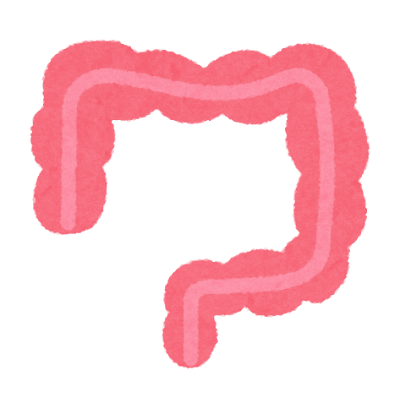

大腸
- 盲腸と虫垂：小腸との間に存在する大腸の始まり
- 結腸：盲腸から上行結腸、横行結腸、下行結腸、S状結腸と連続する
大腸は腹部の周囲を一周するように形成されている。
- 直腸・肛門管：結腸末端の直腸は骨盤内に存在する
- 機能
- 水分・電解質の再吸収
小腸から一日に約9ℓの液体が大腸に到達し90％が吸収される
- 便形成
未消化物に水分を吸収して固形化し、蠕動運動で肛門側へ移動
- 腸内細菌叢の活動
大腸には100兆個以上の細菌が棲息し、未消化の炭水化物を発酵させて短鎖脂肪酸を産生する
- 免疫機能のサポート
腸管関連リンパ組織が異物や病原体の侵入を監視し、免疫応答を調節
1(脳)
2(肺)
3(心臓)
4(胃)
5(小腸)
top